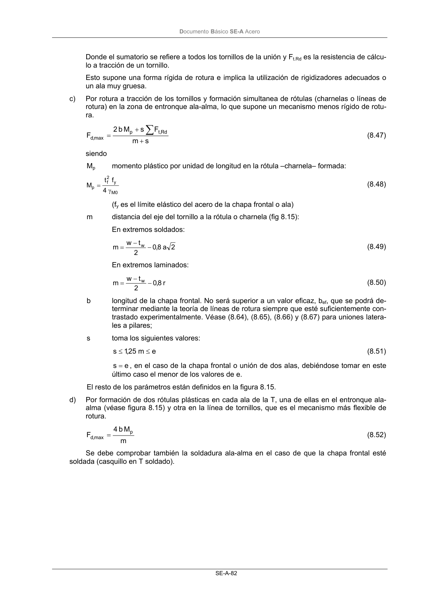
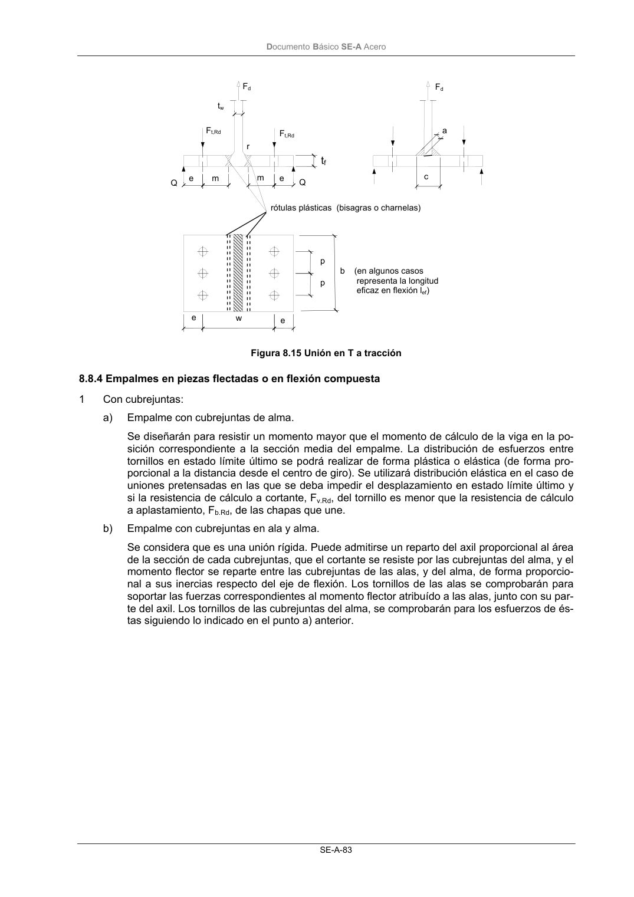

DB-SE-A · Fragmento de PDF p84 · versión 2007-10-23 · capa oficial
Formatos: JSON compacto · Markdown · PDF fuente
Ámbito del documento · texto del ámbito · documento y tablas
ID técnico a0126 · PDF pág. 84-85 · jerarquía no validada por persona · no es capítulo: sin_linea_de_encabezado · padre: raíz · literal original en el contenido: «∑»
∑ (8.47) siendo Mp momento plástico por unidad de longitud en la rótula –charnela– formada: 0 M y 2 f p 4 f t M γ = (8.48) (fy es el límite elástico del acero de la chapa frontal o ala) m distancia del eje del tornillo a la rótula o charnela (fig 8.15): En extremos soldados: 2 a 8,0 2 t w m w− − = (8.49) En extremos laminados: r 8,0 2 t w m w− − = (8.50) b longitud de la chapa frontal. No será superior a un valor eficaz, bef, que se podrá de- terminar mediante la teoría de líneas de rotura siempre que esté suficientemente con- trastado experimentalmente. Véase (8.64), (8.65), (8.66) y (8.67) para uniones latera- les a pilares; s toma los siguientes valores: e m 25 ,1 s ≤ ≤ (8.51) e s = , en el caso de la chapa frontal o unión de dos alas, debiéndose tomar en este último caso el menor de los valores de e. El resto de los parámetros están definidos en la figura 8.15. d) Por formación de dos rótulas plásticas en cada ala de la T, una de ellas en el entronque ala- alma (véase figura 8.15) y otra en la línea de tornillos, que es el mecanismo más flexible de rotura. m M b 4 F p max ,d = (8.52) Se debe comprobar también la soldadura ala-alma en el caso de que la chapa frontal esté soldada (casquillo en T soldado). DocumentoBásico SE-A Acero SE-A-83 Figura 8.15 Unión en T a tracción


PDF fuente redistribuible: copia fiel enlazada en esta página (SHA256 verificado).